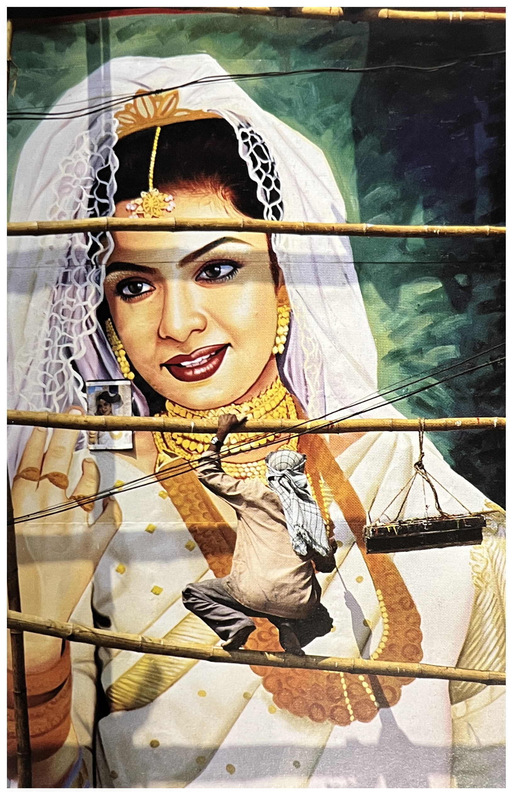
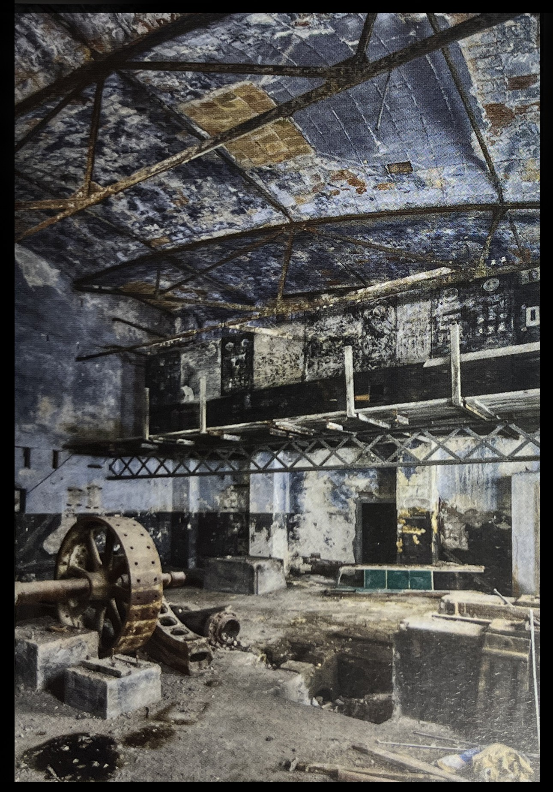

✓ 만족스러운 비율 :
주제, 화면, 구성에서 특정한 비율들이 경험을 통해서
대부분의 사람들을 만족시키는 것으로 알려지고 있다.
그런 비율들을 다루라.
여기에는 황금분할, 필연적으로 연관되어 있는 다른 비율들,
방사대칭과 좌우대칭 등이 포함된다.
렌즈와 시점의 선택도 중요하다.
예를 들어 긴 초점의 렌즈를 사용해야 사람얼굴의
비율이 보기 좋게 표현된다.
✓ 조화 :
색상, 톤, 질감, 영역들 사이의 관계에서 대부분의 사람들이
인식하기에 균형을 이루고 있는 것.
✓ 통일성 :
장면을 하나로 묶어주는 화면, 조명, 구성적 장치를 말한다.
예를 들면 사람의 눈길을 화면 안으로 끌어들이는 곡선이나
아이라인의 결합.
✓ 건강함과 경제성 :
‘더 적은 것이 더 좋다.’ 지나치게 꾸미거나 장식한 장면이나 피사체,
이미지들은 매력이 떨어진다고 판단되는 경향이 있다.
일본어로 ‘시부이’라는 말은 유용하다는 뜻으로,
지나치게 공을 들이지 않고 절제된 아름다움을 말한다.
✓ 정확성 :
일이 어떻게 되어야만 하고,
모습이 어떻게 보여야만 하는가에 대한 대부분의 사람들의
생각에 부합하는 것.
목적에 적합한 것을 말한다.
아름다움은 전통적인 경향이 있으며,
따라서 많은 기술을 필요로 하지만 너무 많은 놀라운 것들을
필요로 하지는 않는다.
✓ 이상적이고 흠이 없는 것 :
만일 피사체가 그렇지 못하다면
적어도 최상의 것을 돋보이게 하거나 최악의 것을 드러나지
않게 억제해야 한다.
이것은 피사체가 풍경이든 물건이든 얼굴이든 아름답게 표현될 수 있는
잠재력이라는 관점에서 피사체를 분석할 수 있어야함을 의미한다.
✓ 유쾌한 기억 :
아름다움을 전달하는 것은 보는 사람의 경험,
특히 자연의 아름다움에 대한 경험과 연관시킨다는 것을 의미한다.
보는 사람이 거기에 있다는 현장감을 더 많이 줄수록 대개 더 효과적이다.
✓ 감각적이고 촉각적인 조명 :
조명을 조종할 수 있거나 만들어낼 수 있는 상황이라면,
앞서 이야기한 특정한 기법들은 특수한 피사체들에 대해서
경험상 더 아름다워 보이도록 만들어낼 수 있다고 알려지고 있다.

➪ 문화로 인한 아름다움 : 한 때 특수한 문화들에 국한되었던 아름다움의 기준들이 이 인도의 화장품 광고 포스터에서 보듯이 이제 점점 더 널리 이해되고 다른 문화들에서도 받아들여지고 있다.
❍ 최상의 상태의 폐허[1/p34]
✓ 이상적으로는 일부가 묻혀 있고 일부는 깨끗한 것.
✓ 중요한 부분들이 새로 자란 초목으로 알아볼 수 없게 되지 않은 것.
✓ 일부는 무너지고, 일부 핵심적인 부분은 알아볼 수 있는 것.
✓ 한두 가지 손으로 만든 것들이 보이는 것. 조각상이 있으면 좋고,
얼굴이나 두상의 조각이 있으면 최상이다.
✓ 사람이 없거나 규모를 표현하기 위해서 있을 때는 한두 사람이
아주 작게 표현되어야 한다. 그렇더라도 사람들은 전통의상을 입은
현지주민이어야 하며 티셔츠를 입은 관광객이어서는 안 된다.
✓ 조명의 분위기, 안개가 끼어서 대기 원근법이 살아 있으면 아주 좋다.
그렇지 않다면 밋밋한 조명은 멜랑콜리하게 받아들여질 수 있다.
그러나 우편엽서 같은 화창한 파란 하늘은 안 된다.
그런 하늘을 피할 수 없다면, 이미지를 흑백으로 전환하는 것이 낫다.
❍ 당나라의 시인 이상은(李商隱,813~858)은
“지는 해는 너무 아름답지만, 그때는 황혼에 가깝다네.”라고 노래했고,
[ 등락유원 (登樂遊原)이라는 시에서는 한 사람의 생의 마지막이
다가오는 것을 이렇게 표현했다.[1/p38]
“석양은 한 없이 좋기만 한데, 다만 아쉬운 건 황혼이 가깝구나.”
✓ 하루의 마지막 순간을 촬영하는 것,
또는 쇠락의 가장자리를 촬영하는 것은 상실의 아름다움을
붙잡아내는 방식이라고 할 수 잇을 것이다.

➪ 오늘 날의 폐허 : 버려진 공장들은 오늘날 폐허가 된 사원들에 해당한다. 바로셀로나 근처 아쉬란드에 있는 이 공장 처럼 폐허가 심할 수록 더 좋게 보인다. 색상 역역이 제한되어 폐허의 느낌을 더 살려 주고 있다는 것을 유념해 보라.
❍ 압도적인 규모와 자연의 힘을 표현하는 방법
✓ 규모
➪ 대규모의 재현(그리고 대형 프린트들은 파인아트 사진에서는 유행이다)
➪ 낮은 수평선과 커다란 하늘
➪ 규모에 비해서 작은 인물을 등장시킴
✓ 힘
➪ 생각에 잠기게 하고 저하시키는 효과를 위한 로우키
➪ 낮은 색상 범위
➪ 구름의 복잡한 형태들과 구름 입체감에 크게 주목함
➪ 소용돌이치고 역동적으로 움직이는 선들과 동선

➪ 환상적인 효과들 : 수법이 좀 더 직설적인 이 이미지는 단순하지만 추상적인 개념으로 만든 합성물이다. [CEO] 지를 포함한 많은 잡지의 커버로 수차례 사용되었는데, 이미지가 가르키는 바가 직접적이이기 때문이다. 이미지는 세 가지 요소들 즉, 실루엣으로 표현된 풍경, 분리된 두 인물의 실루엣, 그리고 천문학적 이미지들을 수집해 놓았다.
[참고문헌]
[1] 사진가 마인드, ‘마이클 프리맨’지음, 김문호 옮김, 비즈앤비즈, 2011.10.25.
[2] 원하는 사진을 어떻게 찍는가, 김성민, 소울메이트, 2015. 2. 9.
....
....
....
....
....